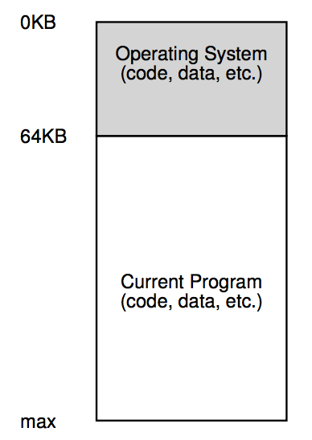
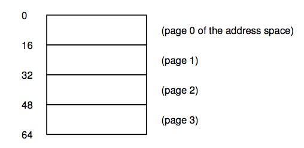
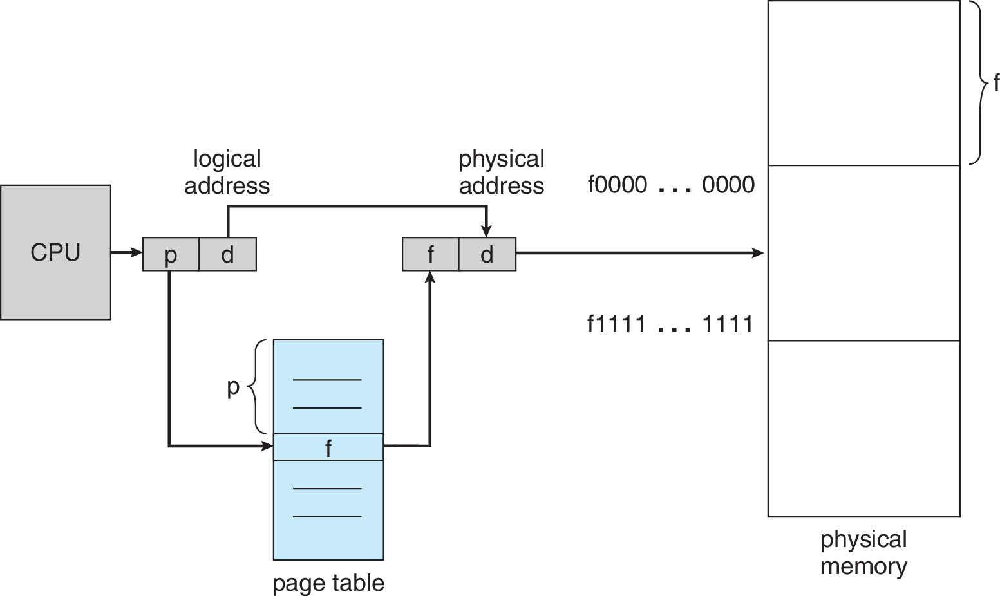

Sistemas Operativos y Redes
Administración de Memoria
Semestre 2022-1
Cristian Ruz - cruz@ing.puc.cl
Departamento de Ciencia de la Computación
Pontificia Universidad Católica de Chile
Memoria
Direcciones de Memoria
- Un gran arreglo de bytes
- Cada uno con su propia dirección
Sin multiprogramación …
Con multiprogramación …

Direcciones de Memoria
Con solamente un proceso en memoria …
mov %eax, 0x10001 ; a += 3
add %eax, $0x3
mov 0x10001, %eaxLa vida del compilador es (más) fácil
- Programa siempre se carga en la misma dirección
- Cada variable tiene la misma dirección en memoria en cada ejecución
Direcciones de Memoria
Con múltiples procesos en memoria (multiprogramación) …
mov %eax, 0x10001 ; falla si a no está en 0x10001
add %eax, $0x3
mov 0x10001, %eaxProcesos pueden cargarse en cualquier parte de la memoria
Problema 1:
- Variables no están siempre en la misma ubicación
- Requisito: relocalización de variables
Direcciones de Memoria
Con múltiples procesos en memoria (multiprogramación) …
mov %eax, 0x20001 ; 0x20001 es memoria de C
add %eax, $0x3
mov 0x20001, %eaxProcesos pueden cargarse en cualquier parte de la memoria
Problema 2:
- Un proceso, por error, podría leer memoria y modificar memoria de otro proceso
- Requisito: protección de memoria
Direcciones de Memoria
Direcciones absolutas no sirven con multiprogramación
- Caso (a). Un proceso único en memoria, de 16KB, cargado en 0.
- Caso (b). Otro proceso único en memoria, de 16KB, cargado en 0.
- Caso (c). Dos procesos de 16KB cargados en memoria, de manera contigua.
Relocalización y protección
Direcciones absolutas no sirven con multiprogramación
- Caso (b). Instrucción
JMP 28está OK si el proceso está cargado en 0. - Caso (c). Si el proceso se carga en
16384JMP 28porJMP 16412. - ¿Cómo conseguirlo?
- Compilador podría generar:
JMP 28+X - Al cargar en memoria se determina que
Xes 16384, y se carga en memoriaJMP 16412 - Ejecutar esto cada vez que se cargue
Direcciones de memoria
¿Cómo podemos saber donde se ubica nuestro código?
#include <stdio.h>
#include <stdlib.h>
int b = 3;
int main(int argc, char *argv[]) {
int x=3;
printf("Location of code : %p\n", (void *)main);
printf("Location of data : %p\n", (void *)&b);
printf("Location of heap : %p\n", (void *)malloc(1));
printf("Location of stack : %p\n", (void *)&x);
return x+b;
}Código completo aquí
Atención: estas direcciones son virtuales 😲
Espacios de direcciones
Dos problemas: (1)relocalización y (2)protección
Abstracción: espacios de direcciones
CPUs desde CDC6600 hasta Intel 8088 integran dos registros:
base y limit- Al cargar cada procesos se cargan estos registros
- Proceso quiere ejecutar
JMP 28 - Pero hardware ejecuta
JMP 28+16384 - Si la dirección es mayor que
limit, se genera un trap - MMU: Memory Manager Unit
¿Resuelto?
Proceso mantiene un espacio único y secuencial (lineal) de direcciones.
- Proceso $A$ utiliza 16KB.
codeen 0-1023heapempieza en 1024, y crecestackempieza en 16383, y decrece- Al cargarlo en memoria, el sistema operativo asigna
Base: 4096,limit: 16384. - Código de $A$ no es modificado
- Proceso $A$ pide la dirección virtual: 768
- MMU entrega la dirección física: 4864
Sobrecarga de memoria
¿Cuántos procesos caben en memoria? ¿Qué pasa si la memoria se llena?
Operaciones de swapping
- Swap-out. Memoria del proceso se copia a disco.
- Swap-in. Memoria del proceso se copia de disco a memoria.
¿Qué pasa con la relocalización?
Procesos pueden ser cargados y descargados de la memoria
Memoria del sistema queda con huecos
¿Qué hacer con los huecos?
¿Qué hacer con los huecos?
Compactación: Fusionar los huecos
- Requiere copiar memoria a otras direcciones
- Caro. No se hace.
- Mejor: asignar espacios de manera que no se necesite compactar
¿Como evitar espacios libres?
Estrategias:
- First-fit. En el primer lugar disponible.
- Best-fit. En el que deja menos espacio libre (el más pequeño posible).
- Worst-fit. En el que deja más espacio libre (el más grande).
Fragmentación
Con cualquier estrategia aún pueden quedar espacios libres no contiguos.
Fragmentación Externa. Espacios libres no contiguos.
- Compactar no es una opción práctica
- Supuesto: procesos se pueden reubicar en cualquier parte de la memoria
- Supuesto: procesos deben ubicarse en espacios contiguos
Segmentación
Problema: un espacio de direcciones muy grande.
Segmentación
Se divide el espacio de direcciones en varios espacios más pequeños
- Espacios más pequeños pueden ser asignados más fácilmente
Segmento: espacio de direcciones contiguo
- Ejemplo: código, datos, heap, stack, …
Implementando segmentación
Ahora hay varios espacios lineales de direcciones.
MMU debe ser capaz de hacer la traducción
| Segment | Base | Size |
code | 32768 (32KB) | 2048 (2KB) |
heap | 34816 (34KB) | 2048 (2KB) |
stack | 28672 (28KB) | 2048 (2KB) |
Tabla de Segmentos
- Dirección virtual (lógica): $100$
- Está en segmento
code - Base + dirección $= 32768 + 100 = 32868$
- Dirección física: $32868$
Implementando segmentación
| Segment | Base | Size |
code | 32768 (32KB) | 2048 (2KB) |
heap | 34816 (34KB) | 2048 (2KB) |
stack | 28672 (28KB) | 2048 (2KB) |
- Dirección virtual (lógica): $4200$
- Está en segmento
heap - Base + dirección $= 34816 + 4200 = 39016$
- Dirección física: $39016$
Segmentation Fault!Implementando segmentación
| Segment | Base | Size |
code | 32768 (32KB) | 2048 (2KB) |
heap | 34816 (34KB) | 2048 (2KB) |
stack | 28672 (28KB) | 2048 (2KB) |
- Dirección virtual (lógica): $4200$
- Está en segmento
heap - Offset dentro de
heap: $4200-\mathbf{4096}=104$ - Base + offset $= 34816 + 104 = 34920$
- Dirección física: $34920$
¿Cómo conozco el segmento? ¿y el offset?
Implementando segmentación
¿Cómo conocer segmento y offset?
- Se pueden hacer restas …
- Pero la lógica de bit es más rápida
Ejemplo: ¿cuántos bit necesitamos para identificar 3 segmentos? $\rightarrow 2$
- Dirección virtual: $4200 = 0b01 0000 0110 1000 = 0x1068$
- Bits de segmento: $0b01 = 1 = 0x1$
- Bits de offset: $0b0000 0110 1000 = 104 = 0x068$
SEG_MASK = 0x3000;
OFFSET_MASK = 0xFFF;
SEG_SHIFT = 12;
virtualAddress = 4200;
segment = (virtualAddress & SEG_MASK) >> SEG_SHIFT;
offset = virtualAddress & OFFSET_MASK;
if(offset >= size[segment])
raise(SEG_FAULT);
else
physicalAddress = base[segment] + offset;Implementando segmentación
| Segment | Base | Size |
code | 32768 (32KB) | 2048 (2KB) |
heap | 34816 (34KB) | 2048 (2KB) |
stack | 28672 (28KB) | 2048 (2KB) |
Atención con el stack.
- Dirección virtual (lógica): $16300$
- Segmento
stack(segmento 3) - Base + offset $= 28672 + 4012 = 32684$
- Dirección física: $32684$ ❌
Implementando segmentación
Otro campo en la tabla de segmentos
| Segment | Base | Size | Upwards |
code | 32768 | 2048 | 1 |
heap | 34816 | 2048 | 1 |
stack | 28672 | 2048 | 0 |
- Dirección virtual (lógica): $16300$
- Segmento
stack(segmento 3) - Offset: complemento de 4096 (4KB, máximo offset). $4012-4096=-84$
- Base + offset $= 28672 - 84 = 28588$
- Dirección física: $28588$ ✔
Visualizando segmentos
Comando
pmap permite ver segmentos asignados a un proceso pmap -x [PID]Atención: necesita un proceso en ejecución
Fragmentación
Implementamos segmentación para eliminar fragmentación externa
Fragmentación Externa. Espacios libres no contiguos.
- Menos fragmentación … pero sigue existiendo
- Difícil anticipar los tamaños de los segmentos
Paginación
Problema: un espacio de direcciones muy grande.
- Idea 1: Dividir el espacio de direcciones en segmentos
- Idea 2: Que los segmentos sean del mismo tamaño: páginas de memoria
Paginación
- Espacio virtual: páginas
- Espacio físico: frames (marcos)
- Páginas y frames del mismo tamaño
Sistema con 128B RAM
- Espacio virtual (lógico) de 64B.
- Espacio físico de 128B.
- Páginas (y frames) de 16B.

- Sistema necesita llevar registro de páginas asignadas a cada proceso
- Sistema necesita información para traducir direcciones virtuales a físicas
Tabla de Páginas
Páginas de 16B, espacio virtual 64B, espacio físico 128B.
- Direcciones posibles en una página: $16 = 2^4$$\rightarrow 4$ bit.
- 4 bit indican el offset dentro de una página.
- Espacio virtual de $64=2^6$ Byte. Requiere $6$ bit.
- 2 bit indican el número de página (VPN).
- Páginas posibles: $2^2=4$ entradas en la tabla de páginas
- Espacio virtual de $128=2^7$ Byte. Require $7$ bit.
- 3 bit indican el número de frame (PFN).
- Frames en la memoria principal: $2^3=8$ frames
Traducción VPN$\to$PFN en la Tabla de Páginas
Tabla de Páginas
Páginas de 16B, espacio virtual 64B, espacio físico 128B.
| Page (VPN) | Frame (PFN) |
| 0 (0b00) | 3 (0b011) |
| 1 (0b01) | 7 (0b111) |
| 2 (0b10) | 5 (0b101) |
| 3 (0b11) | 2 (0b010) |
Dirección virtual: $21\; (0b010101)$
- #Página: $1\; (0b01)$
- Offset: $5\; (0b0101)$
- Tabla: $1 \rightarrow 7$
Dirección física: $117\; (0b1110101)$
Tabla de Páginas
Páginas de 4KB, dirección virtual de 16 bit, dirección física de 15 bit.
Dimensiones
- Tamaño de espacio virtual: $2^{16} \text{B} =65536 \text{B} = 64\text{KB}$
- Tamaño de espacio físico: $2^{15} \text{B} =32768 \text{B} = 32\text{KB}$
- Tamaño de página: $4\text{KB}=2^2\times2^{10}\text{B}= 2^{12}\text{B}$
- Bits para offset: $12$ (rango: $0x000$ a $0xFFF$)
- Bits para #página: $4$ (16 páginas)
- Bits para #frame: $3$ (8 frames)
Traducción
- Dirección lógica: $8196\; (0x2004)$
- #Página: 2
- #Frame: 6
- Dirección física: $24580\; (0x6004)$
Ignoramos el "present/absent" bit, … por ahora
¿De qué tamaño es una tabla de páginas?
- Arquitectura con espacio de direcciones virtuales de 32 bit
- Páginas de $4$KB. $20$ bit para #página, $12$ bit para offset
- ¿Cuántas páginas? $2^{20}$. Tabla de páginas necesita $2^{20}$ entradas (filas, o PTE, Page Table Entry)
¿De qué tamaño es una entrada en la tabla de páginas?
Al menos necesita los bit para el #frame. Si el espacio físico es de 32 bit, necesita $20$ bit.
PTE en x86
V, valid bit (no está en la imagen), indica si la página ha sido asignadaP, present bit, indica si la página está en memoria o en disco.RW, read/write bit, indica si se puede escribirU/S, user-supervisor bit, indica si se puede acceder en user-modePWT,PCD,PAT,G, controlan el cachingA, accessed bit, o reference bit indica si la página ha sido leídaD, dirty bit, indica si la página ha sido modificada
¿De qué tamaño es una tabla de páginas?
- Arquitectura con espacio de direcciones virtuales de 32 bit
- Páginas de $4$KB. $20$ bit para #página, $12$ bit para offset
- ¿Cuántas páginas? $2^{20}$. Tabla de páginas necesita $2^{20}$ entradas (filas, o PTE, Page Table Entry)
¿De qué tamaño es una entrada en la tabla de páginas?
Al menos necesita los bit para el #frame. Si el espacio físico es de 32 bit, necesita $20$ bit.
PTE en x86
- #PTEs: $2^{20}$. Tamaño de cada PTE: $32$ bit $= 4\text{B}$
- Tamaño de tabla de páginas: $2^{20} \times 2^2 \text{B} = 4\text{MB}$
- Cada proceso requiere $4\text{MB}$ de memoria principal sólo para su tabla de páginas.
- Tabla de páginas se almacena en memoria virtual del Sistema Operativo.
Problema: tablas de páginas grandes 😞
¿Cuántos accesos a memoria?
Dirección de tabla de páginas se guarda en PCB, como PageTableBaseRegister (PTBR)
VPN = (virtualAddress & VPN_MASK) >> VPN_SHIFT;
PTEAddress = PageTableBaseRegister + (VPN * sizeof(PTE));
PTE = ReadMemory(PTEAddress);
// está en memoria
if(!PTE.valid)
raise(SEG_FAULT);
// verificación de permisos
else if(PTE.protected)
raise(PROTECTION_FAULT);
// Acceso OK
else {
offset = virtualAddress & OFFSET_MASK;
physicalAddress = (PTE.PFN << PFN_SHIFT) | offset;
register = ReadMemory(physicalAddress);Cada acceso a memoria se convierte en DOS accesos
Problema: accesos en el doble de tiempo 😞

Paginación con TLB
Solución para acelerar acceso a memoria: fully associative caché de direcciones en MMU
Translation Look-aside Buffer (TLB) /
- Si la dirección está en el caché (TLB hit), se responde directamente
- Si la dirección no está en el caché (TLB miss), se lee desde la memoria y se actualiza TLB
VPN = (virtualAddress & VPN_MASK) >> VPN_SHIFT;
(Success, TLBEntry) = TLB_Lookup(VPN);
if(Success) { //TLB Hit: UN acceso a memoria
if(!TLBEntry.protected) {
offset = virtualAddress & OFFSET_MASK;
physicalAddress = (TLBEntry.PFN << PFN_SHIFT) | offset;
register = ReadMemory(physicalAddress);
}
else raise(PROTECTION_FAULT);
}
else { //TLB Miss: DOS accesos a memoria
PTEAddress = PageTableBaseRegister + (VPN * sizeof(PTE));
PTE = ReadMemory(PTEAddress);
if(!PTE.valid) raise(SEG_FAULT);
else if (PTE.protected) raise(PROTECTION_FAULT);
else {
TLB_Insert(VPN, PTE);
Retry();
}
}Efectividad de TLB
Ejemplo: espacio virtual de 8 bit, con páginas de 16 B, almacenando arreglo de 10
int (4B).- 4 bit para offset. 4 bit para #página. 16 páginas.
int sum = 0;
for(i=0; i<10; i++)
sum += a[i];- Considerando sólo el acceso a
a - Sin TLB: 10 $\times$ (acceso tabla de páginas, acceso
a[i]) - 20 accesos a memoria
- Con TLB: miss, hit, hit, miss, hit, hit, hit, miss, hit, hit
- 10 accesos a
a[i], 3 accesos a tabla de páginas (miss) - 13 accesos a memoria
7 de 10 accesos ahorrados: $70\%$ TLB Hit Rate
Con páginas más grandes, el Hit Rate hubiese aumentado
Efectividad de TLB
¿Es bueno $70\%$ de TLB Hit Rate?
int sum = 0;
for(i=0; i<10; i++)
sum += a[i];- Un acceso a memoria física $\approx 100\text{ns} = 10^{-7}\text{s}$
- Un acceso a TLB $\approx 1\text{ns} = 10^{-9}\text{s}$
- TLB Hit $\approx 101\text{ns}$
- TLB Miss $\approx 201\text{ns}$
- Sin TLB. 20 acc. a memoria. $2000\text{ns} = 2\times 10^{-6}\text{s}$
- Con TLB. 13 acc. a memoria, 10 acc. a TLB. $1310\text{ns} = 1.31 \times 10^{-6}\text{s}$
- Aceleración: $2000/1310 \approx 1.52$ veces más rápido.
- Tiempo promedio de acceso: $201\text{ns} \times 0.3 + 101\text{ns} \times 0.7 = 131\text{ns}$
TLB Hit Rate reales $\approx 99\%$
Efectividad de TLB
TLB Hit Rate reales $\approx 99\%$
¿Por qué funciona?
Localidad Espacial
int sum = 0;
for(i=0; i<1000; i++)
sum += a[i];Después de acceder a una dirección
x, el programa probablemente accederá a direcciones cercanas a x- Luego de un miss, y guardar un PTE en TLB, vendrán muchos hit
Localidad Temporal
int sum = 0;
for(k=0; k<10; k++)
for(i=0; i<1000; i++)
sum += a[i];Una dirección
x que acaba de ser accedida, probablemente será accedida de nuevo dentro de poco tiempo- Una PTE recién guardada, volverá a ser usada pronto
El comportamiento real depende del programa, pero la mayor parte del tiempo los programas manifiestan localidad de referencia (espacial o temporal).
Detalles de TLB
¿Dónde se guardan los datos de un TLB ante un cambio de contexto?
- TLB no se almacena en memoria del S.O. (como la Tabla de Páginas), ni en el PCB
- PTBR se actualiza en cada cambio de contexto
- PTEs de un proceso no sirven al siguiente proceso
- Se puede borrar completamente el TLB (flush), marcando todas los valid bit en 0.
TLB Entry de un MIPS R4000
Vindica si la entrada del TLB es válida- Atención: no es el mismo valid bit de la PTE
ASIDindica el Address Space Identifier- Cada proceso tiene su propio
ASID(en su PCB) - Campo
ASIDpermite que coexistan entradas de distintos procesos en el TLB
Variantes de paginación
Problema: tablas de páginas muy grandes 😞
- Arquitectura con espacio de direcciones virtuales de 32 bit
- Páginas de $4$KB. $20$ bit para #página, $12$ bit para offset
- Tabla de páginas necesita $2^{20}$ PTEs
- Tamaño de cada PTE: $32$ bit $= 4\text{B}$
- Tamaño de tabla de páginas: $2^{20} \times 2^2 \text{B} = 4\text{MB}$
- Con 100 procesos, se gasta $400\text{MB}$ del Sistema Operativo sólo en tablas de páginas.
Solución: páginas más grandes
- Con páginas de $1\text{MB}$. $20$ bit para offset, $12$ bit para #página
- Tablas de páginas necesita $2^{12}$ PTEs
- Tamaño de tabla de páginas: $16\text{KB}$ 🎉
Fragmentación Interna
Fragmentación Externa. Espacios libres no contiguos.
Paginación elimina la fragmentación externa (¿por qué?), pero …
Fragmentación Interna. Espacios sobreasignado.
Si las páginas son de $1\text{MB}$ …
- Procesos de $x\text{MB}$, con $x$ entero reciben la cantidad exacta de espacio.
- Un proceso de $16\text{KB}$ recibe $1\text{MB}$ ($1008\text{KB}$ desperdiciados)
- Un proceso de $1025 \text{KB}$ recibe $2\text{MB}$
Espacio se asigna a los procesos pero no se utiliza
Paginas más grandes aumentan la fragmentación interna. 😞
¿De qué tamaño son las páginas de su sistema? (Tip:
getconf PAGE_SIZE)Segmentos paginados
Procesos no suelen ocupar todas sus páginas
Espacio virtual con 16 páginas.
- Proceso utiliza efectivamente: 4 páginas
- 12 entradas vacías ($75\%$) en tabla de páginas
Idea: una tabla de páginas por segmento
- Tablas de páginas más pequeña 😃
base(direcc. de tabla de páginas)limit(#paginas)- Vuelve la fragmentación externa 😟
Tablas de páginas multinivel
En lugar de segmentar, mejor paginar la tabla de páginas
- Dirección virtual de 14-bit, páginas de $64\text{B}$.
- Esquema de 1 nivel: 256 PTEs.
- Memoria: $256 \times 4\text{B} = 1 \text{KB}$
- Esquema de 2 niveles: 16 PTEs en tabla principal, 16 PTEs en 16 tablas de 2do nivel
- Memoria: Al menos tabla principal + 1 tabla secundaria
- Memoria: $16 \times 4\text{B} + 16 \times 4\text{B} = 128{B}$

Tablas de páginas multinivel
Esquema se puede extender a más niveles
- En memoria se necesita la tabla de páginas del primer nivel (completa), y una tabla de cada nivel para poder resolver una dirección física
- Cada división puede tener distintos tamaños

Tablas de páginas invertidas
En lugar de guardar una tabla por proceso, mantener una tabla única para todo el sistema
- Indice es el frame. Una PTE por frame.
- Clave de búsqueda es $\langle$ pid, #page $\rangle$
- Consume menos memoria 😃
- Pero búsqueda es lenta (secuencial) 😞
- Alternativa: usar hashing
PowerPC usaba este esquema
Reemplazo de páginas
Supuesto a eliminar: todo el espacio de direcciones cabe en memoria física
Procesos pueden tener parte de su memoria no cargada aún (en disco), o en swap (en disco).
Desafío: usar efectivamente el disco (grande, pero lento) para proveer la ilusión que todo el espacio virtual está en memoria
Procesos deben seguir creyendo que pueden acceder a todo el rango de direcciones virtuales
- ¿Por qué? Es más fácil para el proceso (separa la ilusión de la realidad)
- Sistema Operativo se encarga de cargar las páginas on-demand
Si no caben más páginas en memoria física, alguna debe salir para hacer más espacio
¿Qué página eliminar?, y ¿a dónde moverla?
Swap space
¿A dónde mover las páginas de memoria?
Páginas que van a ser borradas de memoria van a espacio de swap
- Representan parte del espacio de memoria de un proceso en ejecución
- Tabla de páginas utiliza present bit para saber si la página está en un frame o no
Si la página no está presente, se genera un page fault
Page fault activa el mecanismo de recuperación de una página desde disco a memoria física
- Sistema Operativo atiende el page fault
- Cuando el page fault ha sido resuelto, el proceso puede continuar
Page Fault
Ante un page fault, el sistema operativo va a buscar la página
Algoritmo para paginación con TLB, y page faults
VPN = (virtualAddress & VPN_MASK) >> VPN_SHIFT;
(Success, TLBEntry) = TLB_Lookup(VPN);
if(Success) { //TLB Hit
if(!TLBEntry.protected()) {
offset = virtualAddress & OFFSET_MASK;
physicalAddress = (TLBEntry.PFN << PFN_SHIFT) | offset;
register = ReadMemory(physicalAddress);
}
else raise(PROTECTION_FAULT);
}
else { //TLB Miss
PTEAddress = PageTableBaseRegister + (VPN * sizeof(PTE));
PTE = ReadMemory(PTEAddress); // lectura tabla de paginas
if(!PTE.valid) raise(SEG_FAULT);
else if (PTE.protected) raise(PROTECTION_FAULT);
else if (!PTE.present) raise(PAGE_FAULT);
else { // pagina en memoria
TLB_Insert(VPN, PTE);
Retry();
}
}Page Fault
Mecanismo de rutina page-fault handler
Algoritmo para manejar un page fault
PFN = FindFreePhysicalPage(); // busca frame libre
if(PFN == -1) '// no había frame libre :'(
PFN = ReplacePage(); // rutina de reemplazo de página
// Copia desde el disco a la memoria. Proceso queda "waiting on I/O"
DiskRead(PTE.DiskAddress, PFN);
// Actualiza tabla de páginas
PTE.present = TRUE;
PTE.PFN = PFN;
// Vuelve a ejecutar la instrucción que generó el PAGE_FAULT
Retry(); 
¿Qué página reemplazar?
La ocurrencia de un page-fault es algo malo (significa acceder al disco)
Cualquier algoritmo de decisión debe intentar minimizar la ocurrencia de page-faults
Ejemplo: direcciones virtuales de 16 bit, páginas de 4KB
- Ocurre un page-fault para acceder a la dirección $0x6300$ (página $6$)
- Se escoge la página $9$ y se hace swap
- Proceso continúa y solicita dirección $0x9204$
- Ocurre otro page-fault
- No fue tan buena idea haber sacado la página $9$.
MIN: Reemplazo óptimo
Planteado por Laszlo A. Belady, 1966
Elegir la que será usada lo más lejos posible en el futuro
Ejemplo: Sistema con 3 frames como máximo para un proceso
Secuencia de accesos a páginas: 0, 1, 2, 0, 1, 3, 0, 3, 1, 2, 1
| Página | Hit/Miss | Reemplazar | Páginas en mem. |
| 0 | Miss | 0 | |
| 1 | Miss | 0, 1 | |
| 2 | Miss | 0, 1, 2 | |
| 0 | Hit | 0, 1, 2 | |
| 1 | Hit | 0, 1, 2 | |
| 3 | Miss | 2 | 0, 1, 3 |
| 0 | Hit | 0, 1, 3 | |
| 3 | Hit | 0, 1, 3 | |
| 1 | Hit | 0, 1, 3 | |
| 2 | Miss | 3 | 0, 1, 2 |
| 1 | Hit | 0, 1, 2 |
Tasa de hits (Hit Rate)
$\text{Hit Rate} = \frac{6}{6+5} = 0.545$
Si ignoramos el primer miss de cada página (cold start)
$\text{Hit Rate} = \frac{6}{6+2} = 0.75$
El mejor algoritmo 😃
Pero no podemos conocer el futuro 😞
FIFO: First In First Out
Muy simple de implementar
Elegir la página que lleva más tiempo en memoria
Ejemplo: Sistema con 3 frames como máximo para un proceso
Secuencia de accesos a páginas: 0, 1, 2, 0, 1, 3, 0, 3, 1, 2, 1
| Página | Hit/Miss | Reemplazar | Páginas en mem. |
| 0 | Miss | Queue: 0 | |
| 1 | Miss | Queue: 0, 1 | |
| 2 | Miss | Queue: 0, 1, 2 | |
| 0 | Hit | Queue: 0, 1, 2 | |
| 1 | Hit | Queue: 0, 1, 2 | |
| 3 | Miss | 0 | Queue: 1, 2, 3 |
| 0 | Miss | 1 | Queue: 2, 3, 0 |
| 3 | Hit | Queue: 2, 3, 0 | |
| 1 | Miss | 2 | Queue: 3, 0, 1 |
| 2 | Miss | 3 | Queue: 0, 1, 2 |
| 1 | Hit | Queue: 0, 1, 2 |
Hit Rate
$\text{Hit Rate} = \frac{4}{4+7} = 0.364$
Sin cold start
$\text{Hit Rate} = \frac{4}{4+4} = 0.5$
Más malo que MIN 😞
Si hay más frames disponibles, se debería comportar mejor (¿o no?)
RANDOM
Simple de implementar
Elegir una página aleatoria
Ejemplo: Sistema con 3 frames como máximo para un proceso
Secuencia de accesos a páginas: 0, 1, 2, 0, 1, 3, 0, 3, 1, 2, 1
10000 ejecuciones
- MIN hits: 6
- FIFO hits: 4
FIFO y RANDOM no aprovechan la localidad de referencia
Podrían eliminar páginas que van a usarse en el corto plazo.
LRU: Least Recently Used
Una página que se usó recientemente, probablemente pronto será usada otra vez
Elegir la página que lleva más tiempo sin usarse
Ejemplo: Sistema con 3 frames como máximo para un proceso
Secuencia de accesos a páginas: 0, 1, 2, 0, 1, 3, 0, 3, 1, 2, 1
| Página | Hit/Miss | Reemplazar | Páginas en mem. |
| 0 | Miss | LRU: 0 | |
| 1 | Miss | LRU: 0, 1 | |
| 2 | Miss | LRU: 0, 1, 2 | |
| 0 | Hit | LRU: 1, 2, 0 | |
| 1 | Hit | LRU: 2, 0, 1 | |
| 3 | Miss | 2 | LRU: 0, 1, 3 |
| 0 | Hit | LRU: 1, 3, 0 | |
| 3 | Hit | LRU: 1, 0, 3 | |
| 1 | Hit | LRU: 0, 3, 1 | |
| 2 | Miss | 0 | LRU: 3, 1, 2 |
| 1 | Hit | LRU: 3, 2, 1 |
Hit Rate
$\text{Hit Rate} = \frac{6}{6+5} = 0.545$
Sin cold start
$\text{Hit Rate} = \frac{6}{6+2} = 0.75$
- MIN: 1 miss, Hit Rate $0.75$
- FIFO: 3 misses, Hit Rate $0.571$
- Similar a MIN 😃
- Implementable 😃
- ¿Eficientemente? 🤔
Workload sin localidad
Algoritmos de reemplazo se comparan ejecutándolos bajo una secuencia de accesos a páginas (workload), y distinta cantidad de frames disponibles.
100 páginas. Secuencia de 10000 accesos sin localidad.
- Sin localidad todas las políticas que podemos implementar se comportan igual
- Con suficientes frames disponibles se llega a Hit Rate 1.
- Patrón poco común (pero posible)
- La cantidad de frames disponibles es como una cantidad de bloques de caché en memoria física
- OPT $\equiv$ MIN
Workload 80-20
100 páginas. Secuencia con 80% de localidad en 10000 accesos.
- 80% de los 10000 accesos se hacen a un 20% de páginas (hot pages)
- 20% de los 10000 accesos se hacen al 80% de páginas restantes (cold pages)
- LRU mejor que FIFO y RANDOM
- Patrón más común
- La cantidad de frames disponibles es como una cantidad de bloques de caché en memoria física
- OPT $\equiv$ MIN
Workload con loop secuencial
100 páginas. Acceso secuencial a 50 páginas (0, 1, …, 49). Se repite hasta completar 10000 accesos.
- FIFO y LRU eliminan las páginas más "antiguas"
- RANDOM se comporta mejor
- Peor caso para FIFO y LRU
- Patrón común en muchas aplicaciones
- Tamaño del conjunto de páginas usadas es crítico

- La cantidad de frames disponibles es como una cantidad de bloques de caché en memoria física
- OPT $\equiv$ MIN
Implementando LRU
¿Fácil de implementar?
- Estructura para FIFO se actualiza en cada miss
- Estructura para LRU se actualiza en cada acceso 😮
Algunas alternativas para implementar LRU
- Mantener cola ordenada en cada acceso a memoria. Caro.
- Agregar timestamp en cada acceso. Puede ser por hardware (más barato).
- Al momento de reemplazar se elige la que tiene menor timestamp
- Requiere comparar todas las páginas candidatas. Caro.
Aproximando LRU
LRU se puede aproximar con ayuda del hardware
Algoritmo del reloj (clock)
Casi igual que algoritmo de segunda oportunidad
Aproximación basada en reference bit (1 si la página ha sido usada)
- Algoritmo apunta a una página (cualquiera)
- Al momento de elegir, se mira reference bit
- Si reference bit$=$1, se cambia a 0 y pasa a la siguiente página
- Si reference bit$=$0, se elige esta página
Aproxima LRU bastante bien, y es eficiente
Aproximando LRU
Enfoque de múltiples reference bit
Algoritmo de aging
Contadores por cada página
- Contadores se actualizan por hardware a intervalos regulares
- En cada tick, los reference bit se copian a cada contador (left shift), y se borran
- Secuencia de bit sirve como historia
- Página con menor contador es la menos usada
Aproximando LRU
Usando los dirty bit (1 si la página ha sido modificada), se pueden priorizar mejor las páginas para el algoritmo del reloj.
| Reference | Dirty | |
| 0 | 0 | No usada recientemente ni modificada. Buena candidata. |
| 0 | 1 | No usada recientemente, pero modificada. |
| 1 | 0 | Usada recientemente, pero no modificada. |
| 1 | 1 | Usada recientemente y modificada. |
Working Set y Thrashing
El modelo de working set intenta determinar si un proceso tiene una cantidad apropiada de frames
Working Set, $w_{\Delta}(t)$: conjunto de páginas utilizadas por un proceso en los últimos $\Delta$ acceso a memoria.
- Medida de la demanda efectiva por frames de un proceso.
- Si no se le puede asignar $|w_{\Delta}(t)|$ frames no conviene tenerlo en ejecución
- Si la suma de los working set de todos los procesos es mayor a la cantidad de frames en el sistema, habrá thrashing
El working set es usado por el medium-term scheduler. /
- Se puede implementar usando los reference bit